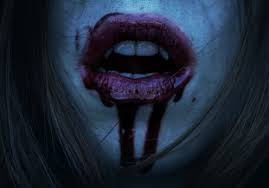

- Dragons
- Werewolves
- Vampires 


Fiction ,we will start from there,is generally is a narrative form, in any medium, consisting of people, events, or places that are imaginary—in other words, not based strictly on history or fact.
Literature with fictional creatures are mostly told to children to engage and indulge their fantasies or to teach and scare them into doing the right thing because most often than not most fictional characters ,whether the villain or the hero has a tragic backstory to support their behaviors.
Below is a list of some of my favourite fictional creatures